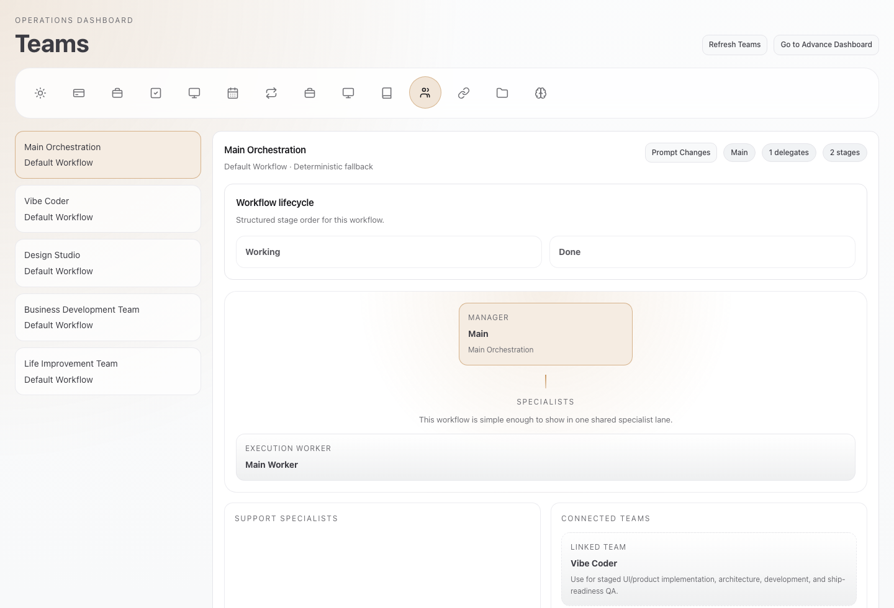

Guided from install to first real run
Maumau
Personal AI team
Why Maumau
Get to a real run without setup fatigue.
Guided onboarding first. Defaults stay filled in. Teams, memory, and dashboards are already part of the system.
You start in the app, not the terminal
Maumau turns blank setup into a guided path, so the first run feels possible instead of technical.

The teams are already assembled
You do not have to design the org chart before the work begins.
Memory stays useful as life gets messy
Keep personal context separate, share what should be shared, and avoid one giant pile of notes.

You can actually tell what happened
Agent work is easier to trust when actions, blockers, and handoffs are visible.
How to start
Start here, in order.
Open the page for each step, finish it, then come back for the next one.
01
Get ChatGPT
Bring your model account
Start with ChatGPT or your API key so Maumau has a brain to connect to.
02
Open BotFather
Create your Telegram bot
This gives Maumau a familiar place to meet you first.
03
Install Tailscale
Connect your phone with Tailscale
So links, tools, and follow-ups stay reachable away from your Mac.
04
Set up Vapi
Add calling with Vapi
This is what lets Maumau handle call-based actions, not just chat.
05
Download Maumau
Download Maumau and run it
Once those pieces are ready, the app guides the rest of the setup for you.